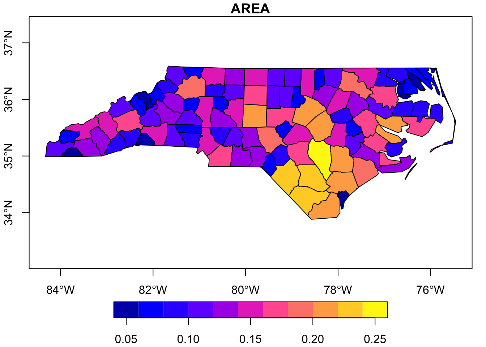
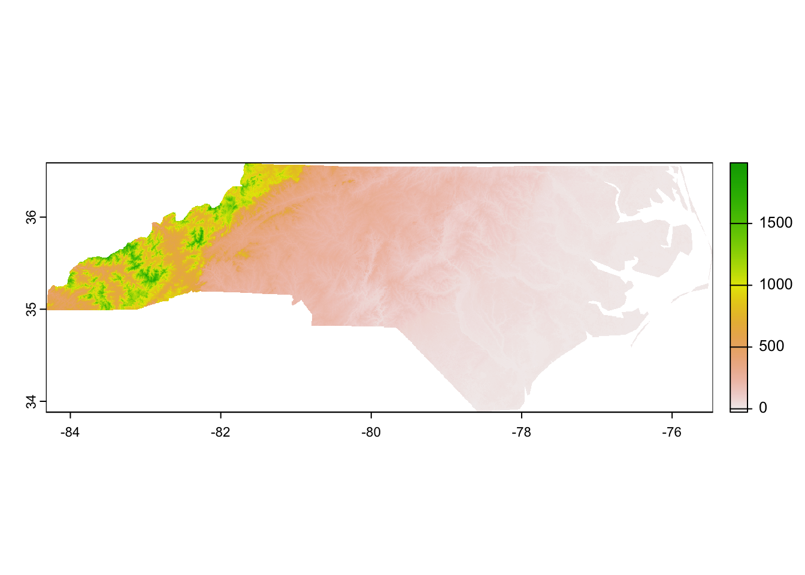
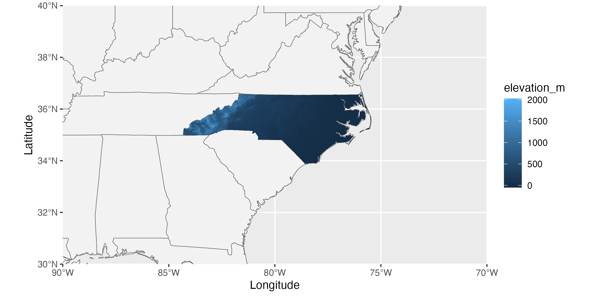

# Note that these lines only need to be run once per computer
## So you can skip this step if you've installed these before
install.packages("tidyverse")
install.packages("sf")
install.packages("terra")
install.packages("maps")
install.packages("exactextractr")Working with Spatial Data
Overview
Synthesis projects often have need of spatial datasets. At its simplest, it can be helpful to have a map of the original project locations including in the synthesis dataset. In more complex instances you want to extract spatial data within a certain area of sampling locations. Regardless of ‘why’ you’re using spatial data, it may come up during your primary or synthesis work and thus deserves consideration in this course’s materials. There are many modes of working with spatial data, and not all of these tools require coding literacy but for consistency with the rest of the modules this module will focus on scripted approaches to interacting with spatial data.
Learning Objectives
After completing this topic you will be able to:
- Define the difference between the two major types of spatial data
- Manipulate spatial data with R
- Create maps using spatial data
- Integrate spatial data with tabular data
Preparation
This is a “bonus” module and thus was created for asynchronous learners. There is no suggested preparatory work.
Needed Packages
If you’d like to follow along with the code chunks included throughout this module, you’ll need to install the following packages:
Types of Spatial Data
There are two main types of spatial data: vector and raster. Both types (and the packages they require) are described in the tabs below.
Vector data are stored as polygons. Essentially vector data are a set of points and–sometimes–the lines between them that define the edges of a shape. They may store additional data that is retained in a semi-tabular format that relates to the polygon(s) but isn’t directly stored in them.
Common vector data types include shape files or GeoJSONs.
# Load needed library
library(sf)
# Read in shapefile
nc_poly <- sf::st_read(dsn = file.path("data", "nc_borders.shp"))- 1
- Note that even though we’re only specifying the “.shp” file in this function you must also have the associated files in that same folder. In this case that includes a “.dbf”, “.prj”, and “.shx”, though in other contexts you may have others.
Once you have read in the shapefile, you can check its structure as you would any other data object. Note that the object has both the ‘data.frame’ class and the ‘sf’ (“simple features”) class. In this case, the shapefile relates to counties in North Carolina and some associated demographic data in those counties.
# Check structure
str(nc_poly)Classes 'sf' and 'data.frame': 100 obs. of 15 variables:
$ AREA : num 0.114 0.061 0.143 0.07 0.153 0.097 0.062 0.091 0.118 0.124 ...
$ PERIMETER: num 1.44 1.23 1.63 2.97 2.21 ...
$ CNTY_ : num 1825 1827 1828 1831 1832 ...
$ CNTY_ID : num 1825 1827 1828 1831 1832 ...
$ NAME : chr "Ashe" "Alleghany" "Surry" "Currituck" ...
$ FIPS : chr "37009" "37005" "37171" "37053" ...
$ FIPSNO : num 37009 37005 37171 37053 37131 ...
$ CRESS_ID : int 5 3 86 27 66 46 15 37 93 85 ...
$ BIR74 : num 1091 487 3188 508 1421 ...
$ SID74 : num 1 0 5 1 9 7 0 0 4 1 ...
$ NWBIR74 : num 10 10 208 123 1066 ...
$ BIR79 : num 1364 542 3616 830 1606 ...
$ SID79 : num 0 3 6 2 3 5 2 2 2 5 ...
$ NWBIR79 : num 19 12 260 145 1197 ...
$ geometry :sfc_MULTIPOLYGON of length 100; first list element: List of 1
..$ :List of 1
.. ..$ : num [1:27, 1:2] -81.5 -81.5 -81.6 -81.6 -81.7 ...
..- attr(*, "class")= chr [1:3] "XY" "MULTIPOLYGON" "sfg"
- attr(*, "sf_column")= chr "geometry"
- attr(*, "agr")= Factor w/ 3 levels "constant","aggregate",..: NA NA NA NA NA NA NA NA NA NA ...
..- attr(*, "names")= chr [1:14] "AREA" "PERIMETER" "CNTY_" "CNTY_ID" ...If desired, we could make a simple R base plot-style map. In this case we’ll do it based on just the county areas so that the polygons are filled with a color corresponding to how large the county is.
# Make a graph
plot(nc_poly["AREA"], axes = T)
Raster data are stored as values in pixels. The resolution (i.e., size of the pixels) may differ among rasters but in all cases the data are stored at a per-pixel level.
Common raster data types include GeoTIFFs (.tif) and NetCDF (.nc) files.
# Load needed library
library(terra)
# Read in raster
nc_pixel <- terra::rast(x = file.path("data", "nc_elevation.tif"))Once you’ve read in the raster file you can check it’s structure as you would any other object but the resulting output is much less informative than for other object classes.
# Check structure
str(nc_pixel)S4 class 'SpatRaster' [package "terra"]Regardless, now that we have the raster loaded we can make a simple graph to check out what sort of data is stored in it. In this case, each pixel is 3 arcseconds on each side (~0.0002° latitude/longitude) and contains the elevation (in meters) of that pixel.
# Make a graph
terra::plot(nc_pixel)
Coordinate Reference Systems
A fundamental problem in spatial data is how to project data collected on a nearly spherical planet onto a two-dimensional plane. This has been solved–or at least clarified–by the use of Coordinate Reference Systems (a.k.a. “CRS”). All spatial data have a CRS that is explicitly identified in the data and/or the metadata because the data are not interpretable without knowing which CRS is used.
The CRS defines the following information:
- Datum – model for shape of the Earth including the starting coordinate pair and angular units that together define any particular point on the planet
- Note that there can be global datums that work for any region of the world and local datums that only work for a particular area
- Projection – math for the transformation to get from a round planet to a flat map
- Additional parameters – any other information necessary to support the projection
- E.g., the coordinates at the center of the map
Some people use the analogy of peeling a citrus fruit and flattening the peel to describe the components of a CRS. The datum is the choice between a lemon or a grapefruit (i.e., the shape of the not-quite-spherical object) while the projection is the instructions for taking the complete peel and flattening it.
You can check and transform the CRS in any scripted language that allows the loading of spatial data though the specifics do differ between the types of spatial data we introduced earlier.
For vector data we can check the CRS with other functions from the sf library. It can be a little difficult to parse all of the information that returns but essentially it is most important that the CRS match that of any other spatial data with which we are working.
# Check CRS
sf::st_crs(x = nc_poly)Coordinate Reference System:
User input: WGS 84
wkt:
GEOGCRS["WGS 84",
DATUM["World Geodetic System 1984",
ELLIPSOID["WGS 84",6378137,298.257223563,
LENGTHUNIT["metre",1]]],
PRIMEM["Greenwich",0,
ANGLEUNIT["degree",0.0174532925199433]],
CS[ellipsoidal,2],
AXIS["latitude",north,
ORDER[1],
ANGLEUNIT["degree",0.0174532925199433]],
AXIS["longitude",east,
ORDER[2],
ANGLEUNIT["degree",0.0174532925199433]],
ID["EPSG",4326]]Once you know the CRS, you can transform the data to another CRS if desired. This is a relatively fast operation for vector data because we’re transforming geometric data rather than potentially millions of pixels.
# Transform CRS
nc_poly_nad83 <- sf::st_transform(x = nc_poly, crs = 3083)
# Re-check CRS
sf::st_crs(nc_poly_nad83)- 1
- In order to transform to a new CRS you’ll need to identify the four-digit EPSG code for the desired CRS.
Coordinate Reference System:
User input: EPSG:3083
wkt:
PROJCRS["NAD83 / Texas Centric Albers Equal Area",
BASEGEOGCRS["NAD83",
DATUM["North American Datum 1983",
ELLIPSOID["GRS 1980",6378137,298.257222101,
LENGTHUNIT["metre",1]]],
PRIMEM["Greenwich",0,
ANGLEUNIT["degree",0.0174532925199433]],
ID["EPSG",4269]],
CONVERSION["Texas Centric Albers Equal Area",
METHOD["Albers Equal Area",
ID["EPSG",9822]],
PARAMETER["Latitude of false origin",18,
ANGLEUNIT["degree",0.0174532925199433],
ID["EPSG",8821]],
PARAMETER["Longitude of false origin",-100,
ANGLEUNIT["degree",0.0174532925199433],
ID["EPSG",8822]],
PARAMETER["Latitude of 1st standard parallel",27.5,
ANGLEUNIT["degree",0.0174532925199433],
ID["EPSG",8823]],
PARAMETER["Latitude of 2nd standard parallel",35,
ANGLEUNIT["degree",0.0174532925199433],
ID["EPSG",8824]],
PARAMETER["Easting at false origin",1500000,
LENGTHUNIT["metre",1],
ID["EPSG",8826]],
PARAMETER["Northing at false origin",6000000,
LENGTHUNIT["metre",1],
ID["EPSG",8827]]],
CS[Cartesian,2],
AXIS["easting (X)",east,
ORDER[1],
LENGTHUNIT["metre",1]],
AXIS["northing (Y)",north,
ORDER[2],
LENGTHUNIT["metre",1]],
USAGE[
SCOPE["State-wide spatial data presentation requiring true area measurements."],
AREA["United States (USA) - Texas."],
BBOX[25.83,-106.66,36.5,-93.5]],
ID["EPSG",3083]]For raster data we can check the CRS with other functions from the terra library. It can be a little difficult to parse all of the information that returns but essentially it is most important that the CRS match that of any other spatial data with which we are working.
# Check CRS
terra::crs(nc_pixel)[1] "GEOGCRS[\"WGS 84\",\n ENSEMBLE[\"World Geodetic System 1984 ensemble\",\n MEMBER[\"World Geodetic System 1984 (Transit)\"],\n MEMBER[\"World Geodetic System 1984 (G730)\"],\n MEMBER[\"World Geodetic System 1984 (G873)\"],\n MEMBER[\"World Geodetic System 1984 (G1150)\"],\n MEMBER[\"World Geodetic System 1984 (G1674)\"],\n MEMBER[\"World Geodetic System 1984 (G1762)\"],\n MEMBER[\"World Geodetic System 1984 (G2139)\"],\n ELLIPSOID[\"WGS 84\",6378137,298.257223563,\n LENGTHUNIT[\"metre\",1]],\n ENSEMBLEACCURACY[2.0]],\n PRIMEM[\"Greenwich\",0,\n ANGLEUNIT[\"degree\",0.0174532925199433]],\n CS[ellipsoidal,2],\n AXIS[\"geodetic latitude (Lat)\",north,\n ORDER[1],\n ANGLEUNIT[\"degree\",0.0174532925199433]],\n AXIS[\"geodetic longitude (Lon)\",east,\n ORDER[2],\n ANGLEUNIT[\"degree\",0.0174532925199433]],\n USAGE[\n SCOPE[\"Horizontal component of 3D system.\"],\n AREA[\"World.\"],\n BBOX[-90,-180,90,180]],\n ID[\"EPSG\",4326]]"As with vector data, if desired you can transform the data to another CRS. However, unlike vector data, transforming the CRS of raster data is very computationally intense. If at all possible you should avoid re-projecting rasters. If you must re-project, consider doing so in an environment with greater computing power than a typical laptop. Also, you should export a new raster in your preferred CRS after transforming so that you reduce the likelihood that you need to re-project again later in the lifecylce of your project.
In the interests of making this website reasonably quick to re-build, the following code chunk is not actually evaluated but is the correct syntax for this operation.
# Transform CRS
nc_pixel_nad83 <- terra::project(x = nc_pixel, y = "epsg:3083")
# Re-check CRS
terra::crs(nc_pixel_nad83)Making Maps
Now that we’ve covered the main types of spatial data as well as how to check the CRS (and transform if needed) we’re ready to make maps! For consistency with other modules on data visualization, we’ll use ggplot2 to make our maps but note that base R also supports map making and there are many useful tutorials elsewhere on making maps in that framework.
The maps package includes some useful national and US state borders so we’ll begin by preparing an object that combines both sets of borders.
# Load library
library(maps)
# Make 'borders' object
borders <- sf::st_as_sf(maps::map(database = "world", plot = F, fill = T)) %>%
dplyr::bind_rows(sf::st_as_sf(maps::map(database = "state", plot = F, fill = T)))Note that the simplest way of making a map that includes a raster is to coerce that raster into a dataframe. To do this we will translate each pixel’s geographic coordinates into X and Y values.
nc_pixel_df <- as.data.frame(nc_pixel, xy = T) %>%
# Rename the 'actual' data layer more clearly
dplyr::rename(elevation_m = SRTMGL3_NC.003_SRTMGL3_DEM_doy2000042_aid0001)With the borders object and our modified raster in hand, we can now make a map that includes useful context for state/nation borders. Synthesis projects often cover a larger geographic extent than primary projects so this is particularly useful in ways it might not be for primary research.
# Load library
library(ggplot2)
# Make map
ggplot(borders) +
geom_sf(fill = "gray95") +
coord_sf(xlim = c(-70, -90), ylim = c(30, 40), expand = F) +
geom_tile(data = nc_pixel_df, aes(x = x, y = y, fill = elevation_m)) +
labs(x = "Longitude", y = "Latitude")- 1
- This line is filling our nation polygons with a pale gray (helps to differentiate from ocean)
- 2
- Here we set the map extent so that we’re only getting our region of interest

From here we can make additional ggplot2-style modifications as/if needed. This variant of map-making supports adding tabular data objects as well (though they would require separate geometries). Many of the LTER Network Office-funded groups that make maps include points for specific study locations along with a raster layer for an environmental / land cover characteristic that is particularly relevant to their research question and/or hypotheses.
Extracting Spatial Data
By far the most common spatial operation that LNO-funded synthesis working groups want to perform is extraction of some spatial covariate data within their region of interest. “Extraction” here includes (1) the actual gathering of values from the desired area, (2) summarization of those values, and (3) attaching those summarized values to an existing tabular dataset for further analysis/visualization. As with any coding task there are many ways of accomplishing this end but we’ll focus on one method in the following code chunks: extraction in R via the exactextractr package.
This package expects that you’ll want to extract raster data within a the borders described in some type of vector data. If you want the values in all the pixels of a GeoTIFF that fall inside the boundary defined by a shapefile, tools in this package will be helpful.
We’ll begin by making a simpler version of our North Carolina vector data. This ensures that the extraction is as fast as possible for demonstrative purposes while still being replicable for you.
# Simplify the vector data
nc_poly_simp <- nc_poly %>%
dplyr::filter(NAME %in% c("Wake", "Swain")) %>%
dplyr::select(NAME, AREA)
# Check structure to demonstrate simplicity
dplyr::glimpse(nc_poly_simp)- 1
-
Note that even though we used
selectto remove all but one column, the geometry information is retained!
Rows: 2
Columns: 3
$ NAME <chr> "Wake", "Swain"
$ AREA <dbl> 0.219, 0.141
$ geometry <MULTIPOLYGON [°]> MULTIPOLYGON (((-78.92082 3..., MULTIPOLYGON (((-83.3317 35..…Now let’s use this simplified object and extract elevation for our counties of interest (normally we’d likely do this for all counties but the process is the same).
# Load needed libraries
library(exactextractr)
library(purrr)
# Perform extraction
extracted_df <- exactextractr::exact_extract(x = nc_pixel, y = nc_poly_simp,
include_cols = c("NAME", "AREA"),
progress = F) %>%
# Collapse to a dataframe
purrr::list_rbind(x = .)
# Check structure
dplyr::glimpse(extracted_df)- 1
- Note that functions like this one assume that both spatial data objects use the same CRS. We checked that earlier so we’re good but remember to include that check every time you do something like this!
- 2
-
All column names specified here from the vector data (see the
yargument) will be retained in the output. Otherwise only the extracted value and coverage fraction are included. - 3
- This argument controls whether a progress bar is included. Extremely useful when you have many polygons / the extraction takes a long time!
- 4
- The default output of this function is a list with one dataframe of extracted values per polygon in your vector data so we’ll unlist to a dataframe for ease of future operations
Rows: 521,671
Columns: 4
$ NAME <chr> "Wake", "Wake", "Wake", "Wake", "Wake", "Wake", "Wak…
$ AREA <dbl> 0.219, 0.219, 0.219, 0.219, 0.219, 0.219, 0.219, 0.2…
$ value <dbl> 95, 97, 100, 100, 100, 101, 103, 105, 110, 111, 111,…
$ coverage_fraction <dbl> 0.027789708, 0.084839255, 0.141893625, 0.198947996, …In the above output we can see that it has extracted the elevation of every pixel within each of our counties of interest and provided us with the percentage of that pixel that is covered by the polygon (i.e., by the shapefile). We can now summarize this however we’d like and–eventually–join it back onto the county data via the column(s) we specified should be retained from the original vector data.
Additional Resources
Papers & Documents
Workshops & Courses
- The Carpentries. Introduction to Geospatial Raster and Vector Data with R. 2024.
- The Carpentries. Introduction to R for Geospatial Data. 2024.
- King, R. Spatial Data Visualization. 2024.
- Flower, J. Introduction to Rasters with
terra. 2024. - Clark, S.J., et al. Spatial and Image Data Using GeoPandas. 2023.
Websites
- NASA. AppEEARS Portal